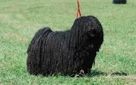

| Erdélyi kopo | Komondor | Kuvasz | Mudi |
|---|---|---|---|
| Puli | Pumi | Vizsla |
|---|---|---|
|  |
Az erdélyi kopó az egyik legelegánsabb kutyafajta. A hosszúlábú változat fekete cservörös jegyekkel és fehér jelzésekkel, marmagassága 55–65 cm, a rövidlábú változat vörös (újabban zsemlesárga) fehér jegyekkel, marmagassága 45–50 cm. Testtömege hosszú lábú változat: 30–35 kg, rövid lábú változat: 22–25 kg.Várható élettartama 14 év. Rövid szőre különösebb gondozást nem igényel. Használatából adódóan teste atletikus felépítésű, szikár, izmos, mozgása kiegyensúlyozott, elegáns. Egész megjelenése nemességet, harmóniát tükröz. Az erdélyi környezeti viszonyok a kopót szívós, bátor kutyává tették. Igénytelen és alkalmazkodó, a terelőkutyákkal ellentétben nem bőbeszédű, feleslegesen sohasem ugat. Játékos és gyermekszerető természete ideális családi kedvenccé teszi anélkül, hogy szüksége lenne kényeztetésre. Idegenekkel szemben tartózkodó, bizalmatlan, de gazdájához nagyon ragaszkodik. Nyugodt természete, tanulékonysága miatt lakásban és kertes házban egyaránt tartható. Bátorsága, hűsége alapján jó házőrző válik belőle. De sohasem szabad elfelejteni, hogy az erdélyi kopó elsősorban vadászkutya, aki ősi ösztöneinek csak nehezen tud ellenállni. Póráz nélkül sétáltatni csak a legnagyobb körültekintéssel szabad, hiszen elég egy felugró nyúl, és kutyánk hanyatt-homlok rohan utána és talán soha nem tér haza. Ezért nagyon fontos az erdélyi kopó megfelelő képzése, a rengeteg séta, játék, amellyel mozgásigényét a gondos gazda kielégíti.
A komondor legfeltűnőbb sajátossága a szőrzete, amelyhez hasonló csak a pulinak és a bergamói pásztorkutyának van. Mérete mellett ez a szőrzet teszi a komondort impozánssá, látványossá. Kialakulásában valószínűleg szerepe volt az ázsiai puszták szélsőséges éghajlatának. Ezért általában a komondornak nincs szüksége házra, csak egy helyre, ahova elhúzódik a csapadék elől. Ápolni nem kell minden nap, elég az összenemezesedett csomókat időnként széttépni, egyébként teljesen öntisztuló. Régen a pásztorok a birkák mellett a komondorról is lenyírták a szőrt, ez a minőségének, úgy látszik, nem ártott. A kiállításon elvárás a nagy szőrzet, a mindennapi életben és a dolgozó kutyákat, egészségi és állatjóléti okokból nyírni szükséges. Jelenleg csak fehér (csontfehér) színben tenyésztik, de régebben létezett sárga, foltos, vadas színű változata is. Nagy termete ellenére mozgása kimért, elegáns. Aki látott már komondort, nehezen tud szabadulni a látvány varázsától. Eredeti munkájából kifolyóan nem nagy igényű fajta, ha megvan a megfelelő tér a mozgásához és a gazdai szeretet, tökéletesen jól érzi magát. Az udvar, porta őrzése annyira a vérében van, hogy tanítani sem kell. A területét nappal keveset mozogva, heverészve őrzi, de ébersége egy pillanatra sem lankad, éjszaka viszont állandó mozgásban van, őrjáratozik. A gyanús mozgást hangos, mély hangú ugatással jelzi, és szerencsére igen ritkán ugat feleslegesen. A betolakodókat szembe támadja le, és nem a megsemmisítés, hanem a hatástalanítás a célja. Amíg a gazda meg nem érkezik, addig a rosszindulatú idegen nem moccanhat.
Megjelenése tetszetős, nemességet, erőt, bátorságot sugároz. Magas, nagy termetű kutya, általában 70 centiméter marmagasságú. Szőrzete fehér vagy elefántcsont színű, enyhén hullámos lefutású, jellegzetes kuvasz-szőrzet. Ellentétben a komondorral, nyáron leváltja szőrtakaróját, vedlik. A világos színű bunda követelmény volt, hiszen az elsősorban esti szürkületkor támadó ragadozóktól így jól megkülönböztethette gazdája a kutyáját. De egyes források szerint a kuvasz egykor nemcsak fehér, hanem vörhenyes, sárgás, sőt, ordas színben is létezett, de sohasem volt tarka. A törzskönyvbe azonban már csak a fehér egyedeket vették fel. Bőre sötét pigmentű. Testalkata arányos, izmos teste küzdőképességről tanúskodik. Csontozata erős, de sohasem durva. Mozgása elegáns, tértölelő. Feje rendkívül nemes, számos fajtabélyeget hordoz, mely jellemzőkkel biztosan megkülönböztethető a rokon fajtáktól. A füle V-alakú, lehajló. Mandulavágású, ferde szeme értelmes és hűséget mutat. Kiváló szimatú. Bátor, kitűnő őrző-védő fajta. Idegenekkel szemben alapvetően bizalmatlan. Fiatal korában könnyen nevelhető, kétéves kor felett már nehezebben idomul. A kuvasznak feladata ellátásához jó szimatra, bátorságra, erőre és támadó kedvre volt szüksége. Különleges jelleme, az évezredek óta génjeiben hordozott szabadságszeretete, nagy fokú önállósága mindenképpen kutyához értő, következetes gazdát követel. Ne is vállalkozzon tartására az, aki nem tud számára elegendő nagyságú szabad területet biztosítani, ahol mozgásigényét, elsőrangú őrző-védő adottságát kiélheti. A kuvasz okos, intelligens kutya. Kellő mennyiségű és megfelelő nevelés és szocializáció után látványos, eredményes őrző-védő és ügyességi munka várható el tőle. Aki nem rest kutyájával rendszeresen foglalkozni, és gazdáját rajongásig szerető, tulajdonát mindhalálig védelmező, lenyűgöző szépségű kutyát szeretne, nem fog csalódni benne.
A mudi az egyik legritkább, legkevésbé ismert magyar pásztorkutyafajta. A pásztorok német puli néven ismerték, ma már csak ritkán látható a nyájak, csordák mellett. A mudi – főleg a különféle, régóta kitenyésztett fajtákkal összevetve – első pillantásra egyszerű keveréknek tűnhet. Szőre rövidebb mint a többi pásztorkutyáé, könnyen tanuló, intelligens állat. Tulajdonképpen bármely színben előfordulhat, de a standard nem ismer el minden színváltozatot. A leggyakoribb a fekete szín, van vörös, barna, fehér, fakó és hamvas (kékes árnyalatban játszó), de sokak szerint a legszebb, legkülönlegesebb színváltozat a cifra, a szürke alapon feketével spriccelt, amely Fényes Dezső szerint a mudi legeredetibb színváltozata. Érdekesség, hogy cifra-cifra párosítás nem ajánlott, a megszületendő kölykök igen gyakran betegek, de ez így van más merle-gént hordozó fajtáknál is, mivel a merle gén letalitást hordozhat. Mivel a mudit eredeti munkája juhászokhoz, pásztorokhoz kötötte, a külleme másodlagos kérdés volt. Szolgálatkész, munkabíró és nem túl igényes kutyára volt szükség, a mudi pedig tökéletesen megfelel ezeknek a követelményeknek. Ezenkívül hosszú életű, intelligens, tanulékony, akinek a gazdája az istene, és egyetlen szemvillantásból is ért. A terelőversenyeken ma is kiemelkedő eredményeket ér el. A „dog dancing” és „agility” sport rajongói is felfedezték mozgékonysága, értelmessége és könnyen képezhetősége okán. Kitartásuk, kitűnő szimatuk miatt a katasztrófakutyák között is feltűnt néhány példányuk. Tudunk epilepszia-jelző és vaddisznóvadászatra használt példányokról is, de a II. világháború környékén kotorékozásra is használtak mudit. Egyes források szerint a solymászatban is bevált. Az sem fog csalódni, aki városi kutyának szeretné: nagyfokú alkalmazkodó képessége, kis termete a lakásban tartást is lehetővé teszi. Ez utóbbi szerepében a szennyeződést szinte taszító, igen könnyen tisztán tartható szőrzete külön előnyt jelent!
A puli egyike a kilenc magyar kutyafajtának, és világszerte a legismertebb terelőkutyafajta közülük. Mintegy száz éve szervezetten tenyésztik. Ősei a pásztoremberek nélkülözhetetlen segítői voltak. Akár egy marhát is adtak egy-egy híres terelő kölykéért. A külsejével nem törődtek. A puli fennmaradása a szorgalmának, találékonyságának, intelligenciájának tudható be. A zord körülmények, a kemény munka edzetté, ellenállóvá és igénytelenné tették a fajtát, ezek a vonások pedig a mai napig jellemzőek a pulira. A puli legfeltűnőbb sajátossága a páratlan szőrköntöse, amihez hasonló csak a szintén magyar puminak van. Szőrszíne lehet fekete, fehér, fakó és a szürke különféle árnyalatai. A szőre lehet szalagos, zsinóros jellegű, nemezes, gubancos, nyílt, sima, selymes. Dús szőrzettel borított gömbölyű feje alig különül el testétől, mert nyaka a hosszú szőrzet miatt szinte nem is látható. Arcorri része rövidebb, mint az agykoponyai része, orrháta egyenes, orrtükre viszonylag nagy, fekete. Állkapcsa fejlett, fogazata erőteljes, metszőfogai ollósan záródnak. Szeme sötétbarna, értelmes tekintetű. Füle széles, lekerekedő, lelógó, szinte észre sem vehető. Háta egyenes, feszes, középhosszú. Ágyéka rövid, egyenes, rendkívül feszes. Farka az ágyéktájékra visszakunkorodik; hosszú szőrzet borítja, ezért szinte beleolvad a far szőrzetébe. Mellkasa hosszú és mély. Hasa enyhén felhúzott. Mellső végtagjai szikár izomzatúak, egyenesek, párhuzamosak. A hátulsó végtagok is jó izomzatúak. A csánk szikár. Mancsa erős, kerekded, karmai feketék vagy palaszürkék.
A pumi őshonos kutyafajtánk, hazánk területén, a 17-18. század folyamán alakították ki a puli és a merinói juhnyájakat hazánkba kísérő terrier jellegű pásztorkutyák kereszteződéséből. Így jött létre a pulinál rövidebb szőrű, lebicsakló fülű terelőkutya, amely gyorsan népszerű lett a pásztorok között, hiszen minden jószág mellett használható volt. A pumi elnevezést, amely valószínűleg Pomeránia nevéből származik, először 1795-ben írták le, majd Pethe Ferenc is megemlíti a Természet Históriája című művében 1815-ben. Első ismert tenyésztője gróf Festetics Sámuel volt. A pumi közepesnél kisebb méretű kutya, amely megjelenésében le sem tagadhatná a terrier ősöket. Szőrzete 4–7 cm hosszú, tincses, nem nemezesedik, de rendszeres ápolást igényel: ajánlatos olykor trimmelni és ollóval igazítani. Leggyakrabban a szürke különböző árnyalataiban fordul elő, de van fehér, fekete és fakó színű is. A pumi egy négy lábon járó vitalitásbomba, amelynek energiája kimeríthetetlen. Rendkívül éber, véleményének mindig hangos csaholással, ugatással ad hangot, amely szokása a szomszédok tetszését nem mindig nyeri el. Nagyfokú mozgásigényét leginkább kertes házban képes kielégíteni, lakásban csak az tartsa, aki naponta több órát tud rá szánni. Gyorsan tanul, hihetetlenül mozgékony, ideális a különböző kutyás sportok űzésére. Szeret szerepelni, a figyelem középpontjában lenni, „bohóckodni”, ezért elsősorban aktív, mozgalmas életet élő családoknak ajánlható.
A magyar vizslákra jellemző az elegáns megjelenés, a könnyed felépítés és a harmonikus mozgás. A viszlakölyköknek a szeme általában kék, de később barnára vált. Testalkata szikár, a szépség és erő harmóniáját tükrözi. A rövid szőrű vizsla zsemleszínű szőrzete alig kíván gondozást. A lakásban tartott példányok szőre egész évben hullik, ezért rendszeres kefélést igényel. Középnagy, 52–61 cm marmagasságú, 19–24 kg súlyú (egyes megtermett példányok akár a 35 kg-ot is elérhetik), rendkívül elegáns megjelenésű és mozgású, kedves, engedelmes természetű, még a vizslák közül is kitűnik intelligenciájával. A vizslák között a legsokoldalúbbnak tartják, amely egyedül végzi el a pointerek, szetterek és a többi vadászkutya munkáját, szóval igazi mindenes. Helyt kell állniuk vízen, mezőn, erdőben is. Kiváló a szaglásuk, a levegőben terjedő szagokat persze a körülményektől függően mint például páratartalom, szélerősség, hőmérséklet akár 150 méterről is megérzik így a megsebzett vadat is könnyen megtalálják és megfelelő távolságból „megállják”. Amikor megmozdul a vad, a vadásznak kell el döntenie, hogy lelőhető-e a vad vagy sem, ezalatt a vizslának egy helyben kell maradnia. A lelőtt vadat készségesen a gazdájuk elé viszik. A rövid szőrű magyar vizsla nemcsak vadászkutya, hanem a család kedvence és a gyerekek játszópajtása is, hiszen intelligenciája, alkalmazkodóképessége minderre alkalmassá teszi. Rendkívül könnyen tanítható, de házőrzőnek nem alkalmas: a besurranót éppúgy körülrajongja, mint a közeli barátot. A drótszőrű magyar vizslával szemben a rövid szőrű inkább alkalmas lakásban tartásra, igazi „kanapé-specialista”, sőt télen a rövid szőrzete nem mindig nyújt megfelelő védelmet a metsző hideg ellen. Városi tenyészetekben túlfinomodik, gyenge idegzetű lesz, noha szigorú és következetes tenyészkiválasztással a legjobb és modern vadászatra legalkalmasabb vizslát lehetne faragni belőle.